용접산업기사 (2018-08-19 기출문제)
1과목: 용접야금 및 용접설비제도
1. 강자성체인 Fe, Ni, Co의 자기 변태 온도가 낮은 것에서 높은 순으로 바르게 배열된 것은?
- Fe → Ni → Co
- Fe → Co → Ni
- Ni → Fe → Co
- Ni → Co → Fe
(정답률: 55%)

2. 일반적인 탄소강에 함유된 5대 원소에 속하지 않는 것은?
- Mn
- Si
- P
- Cr
(정답률: 71%)
3. 탄소강의 표준조직이 아닌 것은?
- 페라이트
- 마텐자이트
- 펄라이트
- 시멘타이트
(정답률: 64%)
4. 다음 중 탈황을 촉진하기 위한 조건으로 틀린 것은?
- 비교적 고온이어야 한다.
- 슬래그의 염기도가 낮아야 한다.
- 슬래그의 유동성이 좋아야 한다.
- 슬래그 중의 산화철분이 낮아야 한다.
(정답률: 68%)
5. 습기제거를 위한 용접봉의 건조 시 건조온도가 가장 높은 것은?
- 저수소계
- 라임티탄계
- 셀룰로오스계
- 고산화티탄계
(정답률: 85%)
6. 알루미늄 계열의 분류에서 번호대와 첨가 원소가 바르게 짝지어진 것은?
- 1000계 : 순금속 알루미늄(순도＞99.0%)
- 3000계 : 알루미늄-Si계 합금
- 4000계 : 알루미늄-Mg계 합금
- 5000계 : 알루미늄-Mn계 합금
(정답률: 59%)
7. 다음 원소 중 황(S)의 해를 방지할 수 있는 것으로 가장 적합한 것은?
- Mn
- Si
- Al
- Mo
(정답률: 74%)
8. 다음 균열 중 모재의 열팽창 및 수축에 의한 비틀림이 주원인이며, 필릿 용접이음부의 루트 부분에 생기는 균열은?
- 힐 균열
- 설퍼 균열
- 크레이터 균열
- 라미네이션 균열
(정답률: 38%)
9. 용접하기 전 예열하는 목적이 아닌 것은?
- 수축 변형을 감소한다.
- 열영향부의 경도를 증가시킨다.
- 용접 금속 및 열영향부에 균열을 방지한다.
- 용접 금속 및 열영향부의 연성 또는 노치인성을 개선한다.
(정답률: 81%)
10. 강을 연하게 하여 기계가공성을 향상시키거나, 내부 응력을 제거하기 위해 실시하는 열처리는?
- 불림(normalizing)
- 뜨임(tempering)
- 담금질(quenching)
- 풀림(annealing)
(정답률: 76%)
11. 다음 중 가는 실선으로 표시되는 것은?
- 외형선
- 숨은선
- 절단선
- 회전 단면선
(정답률: 47%)
12. 다음 중 판의 맞대기 용접에서 위보기 자세를 나타내는 것은?
- H
- V
- O
- AP
(정답률: 91%)
13. 다음 치수기입 방법의 일반 형식 중 잘못 표시된 것은?
- 각도 치수 :
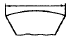
- 호의 길이 치수 :
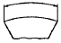
- 현의 길이 치수 :
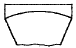
- 변의 길이 치수 :
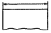
(정답률: 84%)
14. 핸들이나 바퀴의 암 및 리브 훅, 축 구조물의 부재 등에 절단면을 90° 회전하여 그린 단면도는?
- 회전 단면도
- 부분 단면도
- 한쪽 단면도
- 온 단면도
(정답률: 92%)
15. 아래 그림의 화살표 쪽의 인접부분을 참고로 표시하는 데 사용하는 선의 명칭은?
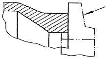
- 가상선
- 숨은선
- 외형선
- 파단선
(정답률: 67%)
16. 다음 중 심(Seam) 용접이음 기호로 맞는 것은?
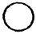
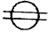
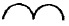
(정답률: 82%)
17. X, Y, Z방향의 축을 기준으로 공간상에 하나의 점을 표시할 때 각 축에 대한 X, Y, Z에 대응하는 좌표값으로 표시하는 CAD 시스템의 좌표계의 명칭은?
- 극좌표계
- 직교좌표계
- 원통좌표계
- 구면좌표계
(정답률: 61%)
18. 도면에 치수를 기입할 때의 유의 사항으로 틀린 것은?
- 치수는 계산할 필요가 없도록 기입하여야 한다.
- 치수는 중복 기입하여 도면을 이해하기 쉽게 한다.
- 관련되는 치수는 가능한 한곳에 보아서 기입한다.
- 치수는 될 수 있는 대로 주투상도에 기입해야 한다.
(정답률: 84%)
19. 다음 KS 용접기호에서 C가 의미하는 것은?
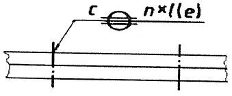
- 용접 강도
- 용접 길이
- 루트 간격
- 용접부의 너비
(정답률: 63%)
20. 기계제도에 사용하는 문자의 종류가 아닌 것은?
- 한글
- 알파벳
- 상형문자
- 아라비아 숫자
(정답률: 78%)
2과목: 용접구조설계
21. 잔류 응력 측정법의 분류에서 정량적 방법에 속하는 것은?
- 부식법
- 자기적 방법
- 응력 이완법
- 경도에 의한 방법
(정답률: 48%)
22. 저온 균열의 발생에 가장 큰 영향을 주는 것은?
- 피닝
- 후열처리
- 예열처리
- 용착금속의 확산성 수소
(정답률: 68%)
23. 그림의 용착 방법 종류로 옳은 것은?
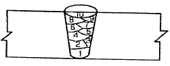
- 전진법
- 후진법
- 비석법
- 덧살 올림법
(정답률: 89%)
24. 다음 중 예열에 관한 설명으로 틀린 것은?
- 용접부와 인접한 모재의 수축응력을 감소시키기 위하여 예열을 한다.
- 냉각속도를 지연시켜 열영향부와 용착금속의 경화를 방지하기 위하여 예열을 한다.
- 냉각속도를 지연시켜 용접금속 내에 수소성분을 배출함으로써 비드 밑 균열을 방지한다.
- 탄소성분이 높을수록 입계점에서의 냉각속도가 느리므로 예열을 할 필요가 없다.
(정답률: 86%)
25. 피복 아크 용접에서 언더컷(under cut)의 발생 원인으로 가장 거리가 먼 것은?
- 용착부가 급냉 될 때
- 아크길이가 너무 길 때
- 용접전류가 너무 높을 때
- 용접봉의 운봉속도가 부적당할 때
(정답률: 66%)
26. 다음 그림과 같은 형상의 용접이음 종류는?
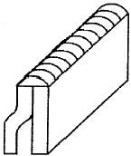
- 십자 이음
- 모서리 이음
- 겹치기 이음
- 변두리 이음
(정답률: 69%)
27. 금속에 열을 가했을 경우 변화에 대한 설명으로 틀린 것은?
- 팽창과 수축의 정도는 가열된 면적의 크기에 반비례한다.
- 구속된 상태의 팽창과 수축은 금속의 변형과 잔류응력을 생기게 한다.
- 구속된 상태의 수축은 금속이 그 장력에 견딜만한 연성이 없으면 파단한다.
- 금속은 고온에서 압축응력을 받으면 잘 파단되지 않으며, 인장력에 대해서는 파단되기 쉽다.
(정답률: 58%)
28. 용접구조물의 피로 강도를 향상시키기 위한 주의사항으로 틀린 것은?
- 가능한 응력 집중부에 용접부가 집중되도록 할 것
- 냉간가공 또는 야금적 변태 등에 의하여 기계적인 강도를 높일 것
- 열처리 또는 기계적인 방법으로 용접부 잔류응력을 완화시킬 것
- 표면가공 또는 다듬질 등을 이용하여 단면이 급변하는 부분을 최소화 할 것
(정답률: 80%)
29. 가늘고 긴 망치로 용접 부위를 계속적으로 두들겨 줌으로써 비드 표면층에 성질 변화를 주어 용접부의 인장 잔류 응력을 완화시키는 방법은?
- 피닝법
- 역변형법
- 취성 경감법
- 저온 응력 완화법
(정답률: 89%)
30. 그림과 같은 용접부에 발생하는 인장응력(σ1)은 약 몇 MPa인가? (단, 용접길이, 두께의 단위는 mm이다.)
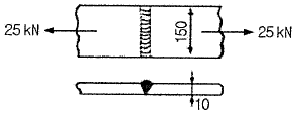
- 14.6
- 16.7
- 21.6
- 26.6
(정답률: 52%)
31. 일반적인 자분탐상 검사를 나타내는 기호는?
- UT
- PT
- MT
- RT
(정답률: 74%)
32. 인장강도 P, 사용응력 σ, 허용응력 σa라 할 때, 안전율을 구하는 공식으로 옳은 것은?
- 안전율 = P/(σ×σa)
- 안전율 = P/σa
- 안전율 = P/(2×σ)
- 안전율 = P/σ
(정답률: 61%)
33. 일반적인 침투 탐상 검사의 특징으로 틀린 것은?
- 제품의 크기, 형상 등에 크게 구애를 받지 않는다.
- 주변 환경의 오염도, 습도, 온도와 무관하게 항상 검사가 가능하다.
- 철, 비철, 플라스틱, 세라믹 등 거의 모든 제품에 적용이 용이하다.
- 시험 표면이 침투제 등과 반응하여 손상을 입는 제품은 검사할 수 없다.
(정답률: 70%)
34. 다음 중 용접사의 기량과 무관한 결함은?
- 용입불량
- 슬래그 섞임
- 크레이터균열
- 라미네이션균열
(정답률: 77%)
35. 처음 길이가 340mm 인 용접 재료를 길이방향으로 인장시험 한 결과 390mm가 되었다. 이 재료의 연신율은 약 몇 %인가?
- 12.8
- 14.7
- 17.8
- 87.2
(정답률: 60%)
36. 본 용접을 시행하기 전에 좌우의 이음 부분을 일시적으로 고정하기 위한 짧은 용접은?
- 후용접
- 점용접
- 가용접
- 선용접
(정답률: 91%)
37. 맞대기 용접 시 부등형 용접 흠을 사용하는 이유로 가장 거리가 먼 것은?
- 수축 변형을 적게 하기 위할 때
- 흠의 용적을 가능한 크게 하기 위할 때
- 루트 주위를 가우징 해야 할 경우 가우징을 쉽개 하기 위할 때
- 위보기 용접을 할 경우 용착량을 적게 하여 용접 시공을 쉽게 해야 할 때
(정답률: 50%)
38. 판 두께가 25mm 이상인 연강에서는 주위의 기온이 0℃ 이하로 내려가면 저온 균열이 발생할 우려가 있다. 이것을 방지하기 위한 예열온도는 얼마정도로 하는 것이 좋은가?
- 50~70℃
- 100~150℃
- 200~250℃
- 300~350℃
(정답률: 48%)
39. 용접을 실시하면 일부 변형과 내부에 응력이 남는 경우가 있는데 이것을 무엇이라고 하는가?
- 인장응력
- 공칭응력
- 잔류응력
- 전단응력
(정답률: 89%)
40. 용접구조물을 설계할 때 주의해야 할 사항으로 틀린 것은?
- 용접구조물은 가능한 균형을 고려한다.
- 용접성, 노치인성이 우수한 재료를 선택하여 시공하기 쉽게 설계한다.
- 중용한 부분에서 용접이음의 집중, 접근, 교차가 되도록 설계한다.
- 후판을 용접할 경우는 용입이 깊은 용접법을 이용하여 층수를 줄이도록 한다.
(정답률: 75%)
3과목: 용접일반 및 안전관리
41. 상온에서 강하게 압축함으로써 경계면을 국부적으로 소성 변형시켜 압접하는 방법은?
- 냉간 압접
- 가스 압접
- 테르밋 용접
- 초음파 용접
(정답률: 62%)
42. 피복 아크 용접에서 감전으로부터 용접사를 보호하는 장치는?
- 원격 제어 장치
- 핫 스타트 장치
- 전격 방지 장치
- 고주파 발생 장치
(정답률: 90%)
43. 다음 중 T형 필릿 용접을 나타낸 것은?
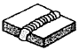
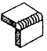
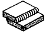
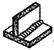
(정답률: 92%)
44. 납땜에 쓰이는 용제(flux)가 갖추어야 할 조건으로 가장 적합한 것은?
- 납땜 후 슬래그 제거가 어려울 것
- 청정한 금속면의 산화를 촉진 시킬 것
- 침지땜에 사용되는 것은 수분을 함유할 것
- 모재와 친화력을 높일 수 있으며 유동성이 좋을 것
(정답률: 84%)
45. 다전극 서브머지드 아크 용접 중 두 개의 전극 와이어를 독립된 전원에 접속하여 용접선에 따라 전극의 간격을 10~30mm 정도로 하여 2개의 전극 와이어를 동시에 녹게 함을써 한꺼번에 많은 양의 용착금속을 얻을 수 있는 것은?
- 다전식
- 탠덤식
- 횡직렬식
- 횡병렬식
(정답률: 55%)
46. 가스 용접 시 전진법에 비교한 후진법의 장점으로 가장 거리가 먼 것은?
- 열 이용율이 좋다.
- 용접 변형이 작다.
- 용접속도가 빠르다.
- 판두께가 얇은 것(3~4mm)에 적당하다.
(정답률: 63%)
47. ø3.2mm인 용접봉으로 연강 판울 가스 용접하려 할 때 선택하여야 할 가장 적합한 판재의 두께는 몇 mm인가?
- 4.4
- 6.6
- 7.5
- 8.8
(정답률: 57%)
48. 가스 용접용 용제에 관한 설명 중 틀린 것은?
- 용제는 건조한 분말, 페이스트 또는 용접봉 표면에 피복한 것도 있다.
- 용제의 융점은 모재의 융점보다 낮은 것이 좋다.
- 연강재료를 가스 용접할 대에는 용제를 사용하지 않는다.
- 용제는 용접 중에 발생하는 금속의 산화물을 용해하지 않는다.
(정답률: 48%)
49. 다음 중 압접에 속하는 용접법은?
- 단접
- 가스 용접
- 전자빔 용접
- 피복 아크 용접
(정답률: 71%)
50. MIG 용접에 관한 설명으로 틀린 것은?
- CO2가스 아크 용접에 비해 스패터의 발생이 많아 깨끗한 비드를 얻기 힘들다.
- 수동 피복 아크 용접에 비해 용접 속도가 빠르다.
- 정전압 특성 또는 상승특성이 있는 직류용접기가 사용된다.
- 전류 밀도가 높아 3mm 이상의 두꺼운 판의 용접에 능률적이다.
(정답률: 67%)
51. 판 두께가 12.7mm인 강판을 가스, 절단하려 할 때 표준 드래그의 길이는 2.4mm이다. 이 때 드래그는 약 몇 %인가?
- 18.9
- 32.1
- 42.9
- 52.4
(정답률: 60%)
52. 피복 아크 용접봉에서 피복 배합체의 성분 중 슬래그 생성제의 역할이 아닌 것은?
- 급냉 방지
- 균일한 전류 유지
- 산화와 절화 방지
- 기공, 내부결함 방지
(정답률: 70%)
53. 다음 중 아크 에어 가우징에 관한 설명으로 가장 적합한 것은?
- 비철금속에는 적용되지 않는다.
- 압축공기의 압력은 1~2kg/cm2 정도가 가장 좋다.
- 용접 균열부분이나 용접 결함부를 제거하는데 사용한다.
- 그라인딩이나 가스 가우징보다 작업 능률이 낮다.
(정답률: 60%)
54. 일반적인 서브머지드 아크 용접에 대한 설명으로 틀린 것은?
- 용접 전류를 증가시키면 용입이 증가한다.
- 용접 전압이 증가하면 비드 폭이 넓어진다.
- 용접 속도가 증가하면 비드 폭과 용입이 감소한다.
- 용접 와이어 지름이 증가하면 용입이 깊어진다.
(정답률: 64%)
55. 피복 아크 용접기의 구비조건으로 틀린 것은?
- 역률 및 효율이 좋아야 한다.
- 구조 및 취급이 간단해야 한다.
- 사용 중에 온도 상승이 커야 한다.
- 용접전류 조정이 용이하여야 한다.
(정답률: 89%)
56. 다음 중 폭발위험이 가장 큰 산소 : 아세틸렌가스의 혼합비율은?
- 85 : 15
- 75 : 25
- 25 : 75
- 15 : 85
(정답률: 58%)
57. 절단산소의 순도가 낮은 경우 발생하는 현상이 아닌 것은?
- 절단속도가 늦어진다.
- 절단흠의 폭이 좁아진다.
- 산소의 소비량이 증가된다.
- 절단 개시 시간이 길어진다.
(정답률: 57%)
58. 아크 용접 작업 중 전격에 관련된 설명으로 옳지 않은 것은?
- 용접 홀더를 맨손으로 취급하지 않는다.
- 습기찬 작업복, 장갑 등을 착용하지 않는다.
- 전격 받은 사람을 발견하였을 때에는 즉시 맨손으로 잡아당긴다.
- 오랜 시간 작업을 중단할 때에는 용접기의 스위치를 끄도록 한다.
(정답률: 91%)
59. 다음 교류 아크용접기 중 가변 저항의 변화로 용접 전류를 조정하며, 조작이 간단하고 원격 제어가 가능한 것은?
- 탭 전환형
- 가동 코일형
- 가동 철심형
- 가포화 리액터형
(정답률: 68%)
60. 구리(순동)를 불활성 가스 텅스텐 아크 용접으로 용접하려 할 때의 설명으로 틀린 것은?
- 보호가스는 아르곤 가스를 사용한다.
- 전류는 직류 정극성을 사용한다.
- 전극봉은 순수 텅스텐 봉을 사용하는 것이 가장 효과적이다.
- 박판을 용접할 때에는 아크열로 시작점에서 가열한 후 용융지가 형성될 때 용접한다.
(정답률: 47%)